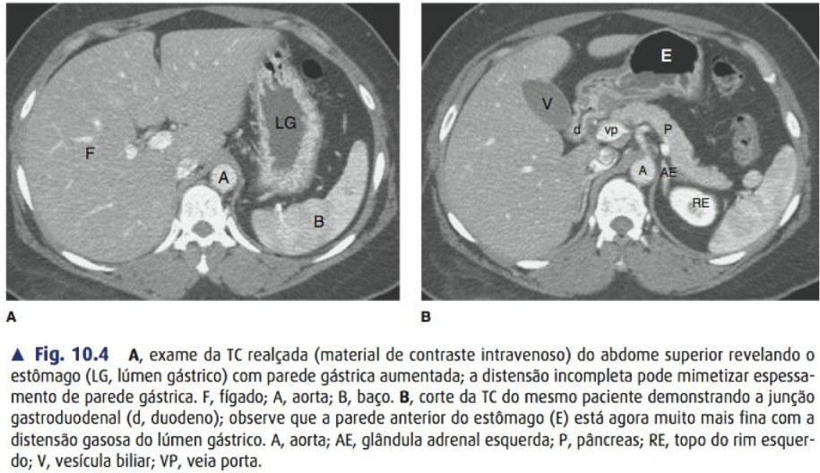
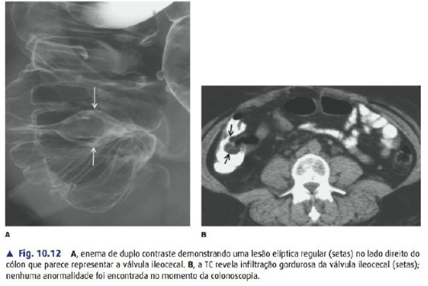

🧭 Orientação
Direita do paciente = SUA esquerda. Coluna sempre embaixo, no meio.
Em cima = anterior. Embaixo = posterior.
ProvaLesão descrita à direita aparece na esquerda da tela. Fígado grande à esquerda da tela = fígado direito.
3 planos:
- Axial — fatia horizontal (seu principal)
- Coronal — corte de frente
- Sagital — corte de perfil
← arraste →
📏 Escala Hounsfield
| Tecido | UH |
|---|---|
| Ar | −1000 |
| Gordura | −100/−50 |
| Água/líquido | ~0 |
| Músculo/víscera | +20/+50 |
| Sangue agudo | +50/+80 |
| Osso/contraste | +300↑ |
Não perderSangue agudo = CLARO. Líquido simples = ESCURO. Na dúvida, clique e meça a UH.
MnemônicoAr→Gordura→Água→Músculo→Sangue→Osso: "A Garota Água-Marinha Sempre Ousa"
🪟 Janelas
Mesma imagem, "brilho" diferente. Cada janela acende um tecido.
| Janela | Vê |
|---|---|
| Partes moles | órgãos, vasos, sangue, coleção (padrão) |
| Pulmonar | parênquima, pneumotórax, ar livre |
| Óssea | fratura, cortical, lesão óssea |
Não perderPneumoperitônio e pneumotórax podem só aparecer na janela pulmonar. Sempre confira o ar nela.
É como ajustar o brilho da TV: a cena é a mesma, muda o que você enxerga.

Fig. 11.50 — TC na colelitíase: janela de partes moles (T) mal mostra o cálculo denso; a janela óssea (O) revela a arquitetura laminada do cálculo na vesícula. Mesmo exame, janelas diferentes.
💉 Contraste
Tinta iodada que fica branca e anda no sangue. Muda tudo qual segundo você fotografa.
| Fase | Pra quê |
|---|---|
| Simples | cálculo, sangramento agudo, calcificação |
| Arterial | aneurisma, dissecção, sangramento ativo (vascular) |
| Portal/venosa | abdome agudo geral, maioria das lesões |
| Tardia | ureter, bexiga, vazamento urinário |
ProvaCálculo urinário: SEM contraste (contraste branco esconde a pedra branca). Sangramento ativo: blush que vaza na arterial e cresce na venosa.
Antes de pedirCheque função renal e alergia a iodo.
🔍 Método
Nunca olhe "no geral". Sempre a mesma ordem:
- 1. Cabeçalho: contraste? fase? janela?
- 2. Rola tudo 1x só pro "mapa"
- 3. Órgão por órgão, de cima ↓
- 4. Procure o que NÃO devia estar (ar fora da alça, líquido, massa, gordura suja)
- 5. Feche em janela pulmonar + óssea
Roteiro abdome"Fui Ver Baço, Pâncreas, Aorta, Rim, Alça, Bexiga"
Fígado→Vias biliares→Baço→Pâncreas→Aorta/vasos→Rins→Alças→Bexiga
Fígado→Vias biliares→Baço→Pâncreas→Aorta/vasos→Rins→Alças→Bexiga

Fig. 10.4 — TC do abdome superior: fígado (F), aorta (A), baço (B), lúmen gástrico (LG); no corte B: vesícula biliar (V), duodeno (d), veia porta (VP), pâncreas (P), adrenal E (AE), rim E (RE).
Gordura "suja" (fat stranding) = inflamação. A gordura normal é preta e lisa; quando inflama fica riscada/enevoada e aponta o foco.
🚨 Não pode perder
PerfuraçãoPneumoperitônio: ar preto fora da alça (janela de pulmão) → abdome cirúrgico.
TraumaHemoperitônio: coleção CLARA (+45/80 UH) perto de órgão = sangue/lesão. Líquido escuro = simples.
FIDApendicite: apêndice >6mm + gordura borrada. Ar/coleção ao redor = perfurou.
AlçaObstrução: alça dilatada antes, murcha depois. O ponto de transição = a causa.
InfecçãoAbscesso: parede que realça + centro líquido; bolhas de ar dentro.
VascularAorta: >3cm = aneurisma; flap na luz = dissecção; contraste extravasando = ruptura.

Fig. 10.12 — Enema de duplo contraste (A) e TC (B): infiltração gordurosa da válvula ileocecal (lipomatose) — pseudotumor, colonoscopia normal.
🎯 Macetes
Hiatos do diafragma"Eu 8, aos 10 comi 12 OVOS"
VCI T8 · Esôfago T10 · Aorta T12
VCI T8 · Esôfago T10 · Aorta T12
Coluna = régua de nível:
- T12 tronco celíaco
- L1 AMS · a. renais · plano transpilórico (pâncreas)
- L3 AMI
- L4 bifurcação da aorta (= umbigo/cristas)
- L5 confluência → VCI
Aorta redonda, parede grossa, à esquerda. VCI ovalada, fina, à direita.
Seguir o vaso pra achar o órgão:
- Celíaco: "Y" da gaivota (esplênica ←, hepática →)
- AMS: VMS à direita. Se à esquerda → má-rotação
- Pâncreas: siga a veia esplênica (sombra atrás dele)
- Adrenais: "Y"; direita atrás da VCI
- Apêndice: ache o ceco e desça até a válvula ileocecal
Delgado: central, pregas que cruzam a luz toda.
Cólon: periférico, haustras que não cruzam + ar/fezes.
CoronalPra achar altura e o ponto de transição da obstrução, abra o coronal — bem mais rápido.